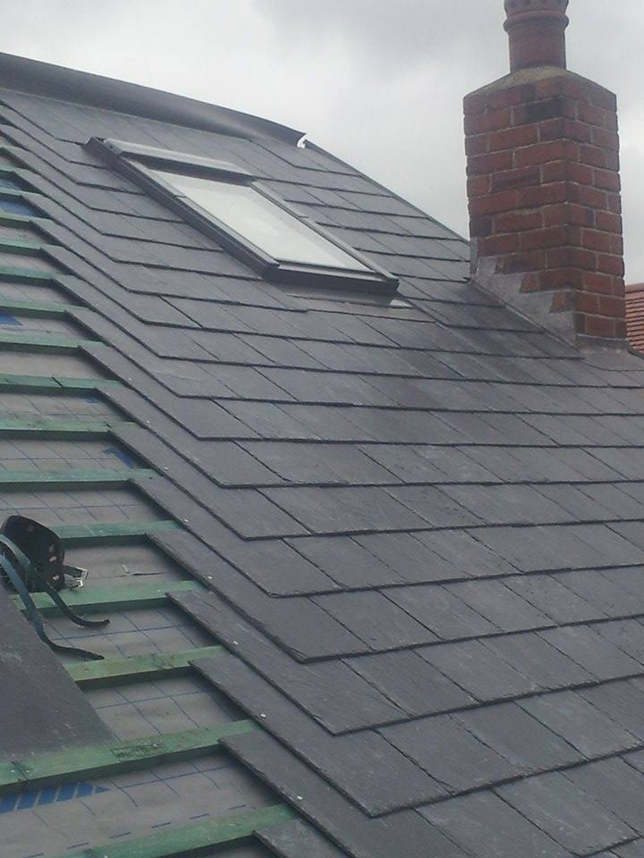

Baurgh Green Extension Winter
TypeExtension
Photos24
AreaBarnsley & South Yorkshire

About the project
Set with a two months schedule, we started by building an extension to the rear of the property and dormer construction
While the extension and kitchen installation was being completed, other tradesmen from our Company worked the conversion of the roof space into a bedroom